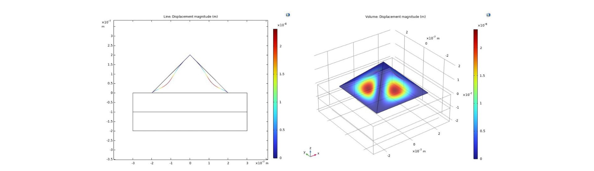

I am a Master’s student in Neuro-X at EPFL, specializing in neuroengineering and computational methods. I have a strong foundation in engineering, data analysis, and biomedical systems, and I enjoy working on complex problems at the intersection of hardware, software, and medical technology. I am particularly interested in the development of medical devices and technologies that can improve patient care. I bring the same discipline and teamwork from competitive volleyball into collaborative engineering projects.
Python · MATLAB · C · Java · COMSOL · HTML · JavaScript · VHDL

Hybrid computational model combining FEM and neural dynamics to study spinal cord stimulation strategies.

Characterized kirigami-based soft electrodes through ageing studies to assess long-term neural implant stability.

Analyzed hundreds of thousands of subreddit hyperlinks to uncover community structure and functional connectivity.

Trained RNNs on Human Connectome Project fMRI data to predict task timecourses via blind deconvolution.
Created a logistic regression model for coronary heart disease risk prediction.

Modelled electromechanical deformation of graphene bubble lenses using multiphysics FEM simulation.
Technologies: MATLAB, Python, COMSOL Multiphysics, NEURON
Built from scratch a hybrid multi-scale computational model of the thoracic spinal cord to study neural recruitment under transcutaneous and epidural electrical stimulation, bridging finite element physics with biophysical neural dynamics.
Code (confidential) · Report
Technologies: Python, PyTorch, RNNs, CNNs
Developed deep learning models to predict task timecourses directly from fMRI brain activity using data from the Human Connectome Project.
My Contributions:

Technologies: Electrochemistry, Impedance Spectroscopy, Material Testing, Data Analysis
Independently investigated the long-term electrochemical and mechanical stability of kirigami-inspired soft electrodes intended for chronic neural implantation, running the full experimental pipeline from ageing protocols to data interpretation.
Report & Code (confidential)

Technologies: Python, Network Analysis, Data Visualization
We treated Reddit as a nervous system — subreddits as neurons, hyperlinks as action potentials, and linguistic co-activation as functional connectivity — asking whether a platform of millions behaves like a brain.
My Contributions: